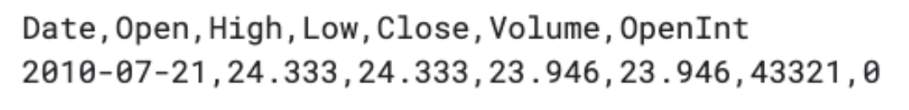
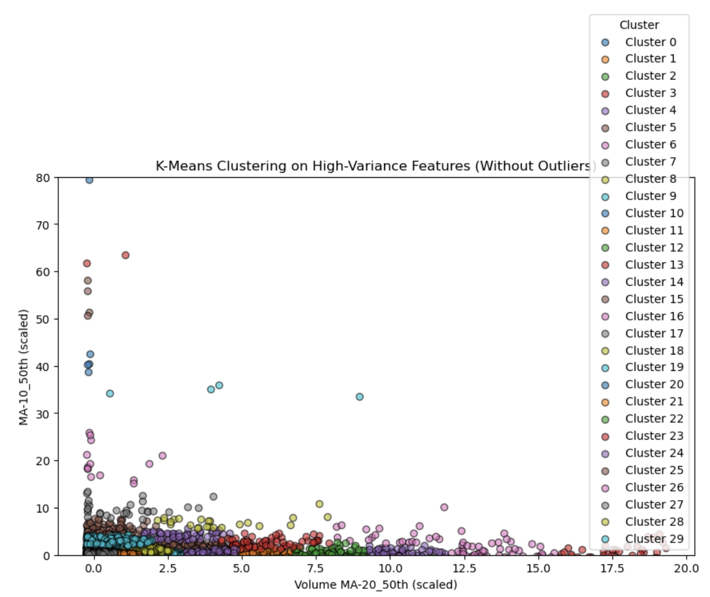
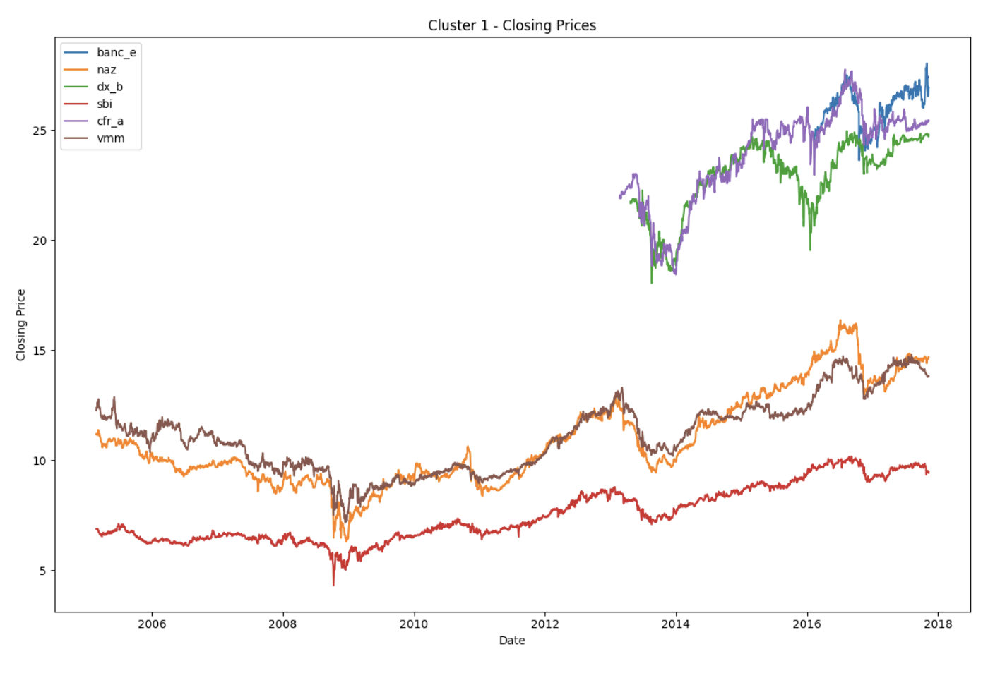
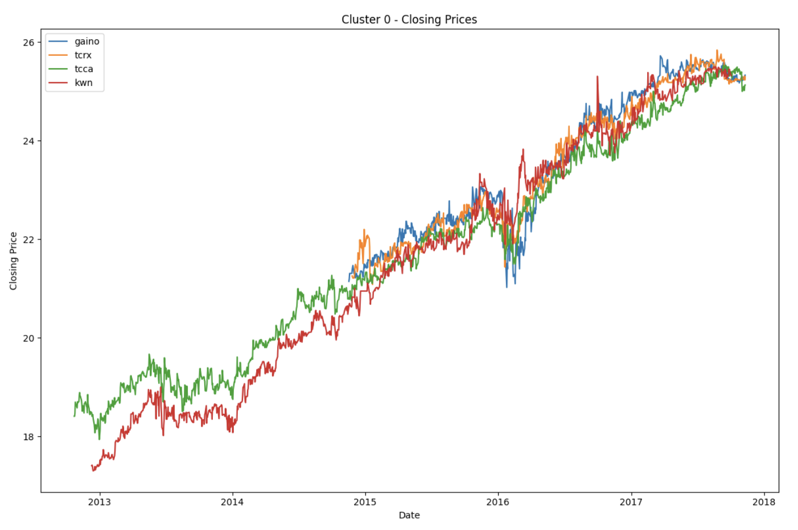
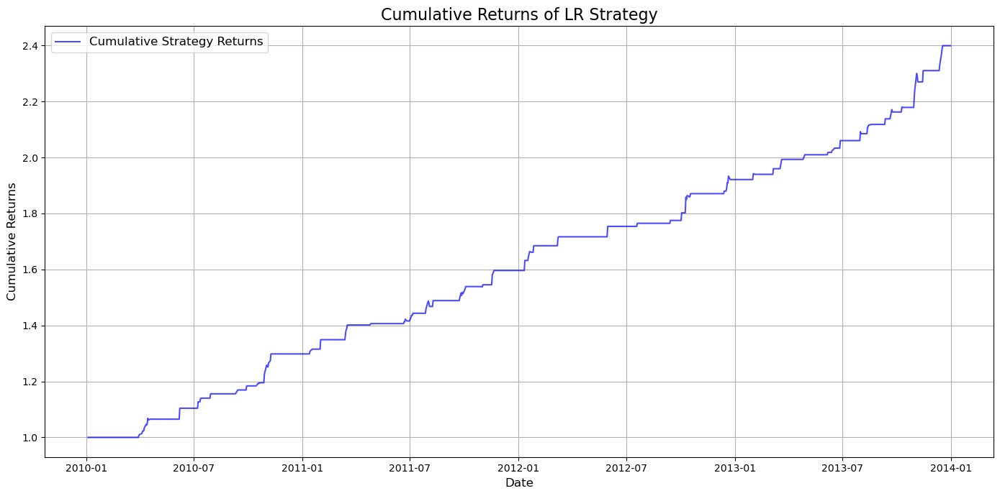
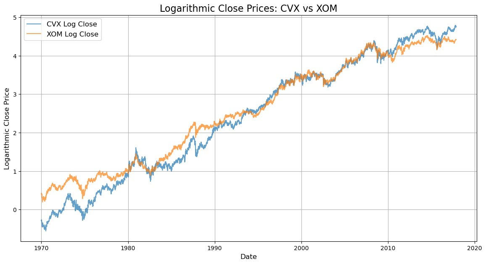
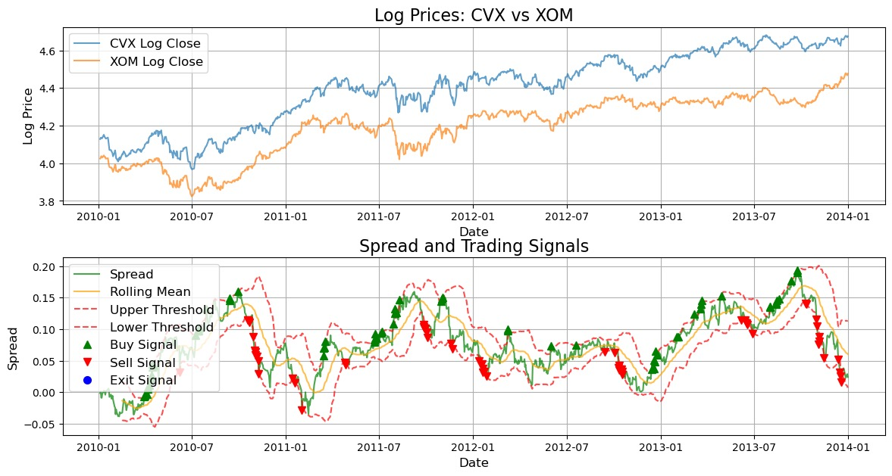

Introduction / Background
Pairs trading is a market-neutral trading strategy that involves matching a long position with a short position in two highly correlated stocks or securities. The idea is to profit from the relative price movements of two stocks that typically move together — called the spread.
Market-neutral strategies are important because they are designed to minimize market risk by offsetting both long and short positions. When markets are bearish, market-neutral strategies are largely unaffected by downturns in price movement.
If the price relationship between two stocks diverges, the trader would short the over-performing stock and go long on the under-performing stock, expecting the prices to eventually converge again. Pairs trading works on the assumption that prices will revert to their historical correlation.
Literature Review
Price Correlation
The correlation between two stocks describes how similarly or differently their prices move relative to each other:
- +1 — stocks move perfectly in tandem
- −1 — stocks move in exactly opposite directions
- ≈0 — little to no relationship in price movements
Machine Learning Applications in Pairs Trading
- Stock Selection & Pair Identification: Clustering, PCA, and regression models analyze historical data to identify co-integrated pairs.
- Predicting Divergence & Convergence: Supervised methods (Random Forest, SVM) and time-series models (LSTM) predict when a pair's spread will revert.
- Risk Management & Execution: ML optimizes trade execution by predicting price slippage and managing risk dynamically.
Kalman Filter Approach
Models the spread between paired assets as a mean-reverting process using a Gaussian linear state space model derived from the Ornstein-Uhlenbeck process. The Kalman filter continuously updates the dynamic hedging ratio as new data arrives — crucial for capturing real-time price movement in financial markets.
Linear Regression Approach
A simpler, static model that quantifies the relationship between two stock prices. Unlike Kalman filtering, linear regression produces a fixed hedging ratio over the training window — providing a "still image" of the historical relationship. Useful as a stable baseline for pairs trading signals.
Dataset Description
We used the "Huge Stock Market Dataset" on Kaggle — originally 7,000+ text files converted to CSV, containing single-equity data with fields: Date, Open, High, Low, Close, Adj Close, Volume. The Alpaca Market API supplemented the dataset with real-time pricing data.

Feature Engineering

A variance threshold was applied to filter out low-variance features. Each time-series metric was condensed to 25th, 50th, and 75th percentile summary statistics over a two-year window — balancing dimensionality reduction against temporal detail.
Problem Definition
Entry & Exit Timing
Can ML models trained on historical price patterns accurately forecast moments when a stock pair's spread is likely to revert — improving trade timing and profitability?
Effective Techniques
Which ML methods — clustering, time-series analysis, reinforcement learning — are most effective for identifying pairs and forecasting price movements?
Risk-Return Profile
How does ML affect risk and return compared to traditional statistical methods? Can ML better manage risk while maintaining profitability?
Motivation
Pairs trading is a low-risk strategy but faces challenges in optimal pair selection and trade timing. ML directly addresses both, making the strategy more efficient and scalable.
Methods
Data Preprocessing
- Normalization / Scaling: Min-Max Scaling (0–1) and Z-score normalization standardize data so price magnitude doesn't distort model learning.
- Missing Data Interpolation: Forward-fill handles gaps from market holidays or incomplete records.
- Feature Engineering: Price ratios, moving averages, volatility, and log returns uncover stock-pair relationships.
- ADF Test: Augmented Dickey-Fuller test checks stationarity — confirming that a series is mean-reverting and suitable for pairs trading.
ML Algorithms
- SVM: Classifies buy/sell states based on price spreads, finding the optimal separating hyperplane.
- Random Forest: Ensemble of decision trees for predicting spreads and classifying trading signals.
- GBM (XGBoost/LightGBM): Detects complex patterns in security relationships via boosted tree ensembles.
- KNN: Classifies states by comparing to historically similar trading opportunities.
- LSTM: Recurrent networks that capture long-range temporal dependencies between asset prices.
- Linear Regression: Establishes the hedging ratio and baseline historical price correlation.
Final Report
K-Means Clustering
K-Means groups stocks by minimizing within-cluster distances. We used the 20-day volume MA (50th pct) and 10-day MA (50th pct) as inputs, standardized to zero mean and unit variance, with K = 30 clusters. Cluster quality was measured via Silhouette score.


DBSCAN Clustering
DBSCAN requires no predefined cluster count — it groups points by density and isolates noise. We first reduced dimensions with t-SNE (perplexity=30, n_iter=300), then ran DBSCAN with eps=0.3, min_samples=8 to balance cluster discovery against noise tolerance.




Linear Regression — XOM / CVX Pair
We selected XOM and CVX — a well-known pairs trading pair. Log transformation was applied to stabilize variance. XOM log-price serves as the independent variable; CVX log-price is the dependent variable. The fitted model yields a hedge ratio and intercept representing the equilibrium relationship.
Signal Generation (Z-Score Thresholds)
- Long signal: z-score ≤ −1.0 → pair undervalued, expect upward reversion
- Short signal: z-score ≥ +1.0 → pair overvalued, expect downward reversion
- Hold: z-score within threshold



Strengths
- 294.48% cumulative return over 4 years
- Sharpe Ratio of 3.82 — outstanding risk-adjusted performance
- Trading signals align well with mean reversion in the spread
Weaknesses
- Based on in-sample data (2010–2014) only
- Static hedging ratio may not capture regime changes
- Needs out-of-sample validation for robustness
Method Comparisons
K-Means vs. DBSCAN
While K-Means excels on well-structured data, DBSCAN's ability to identify irregularly shaped clusters, handle noise, and adapt without a predefined cluster count makes it better suited for the dynamic relationships in financial markets — leading to more meaningful clustering for pairs trading.
DBSCAN + Linear Regression (Combined)
DBSCAN handles the initial pair selection by identifying stocks with similar behavioral profiles. Linear Regression then provides the quantitative framework for trade execution — calculating the hedge ratio and generating entry/exit signals. Used in tandem, they form a robust and adaptive pairs trading pipeline.
Next Steps
- Explore hierarchical clustering and Gaussian Mixture Models for pair identification
- Add LSTM-based spread forecasting to improve signal quality
- Apply Kalman filtering for dynamic hedging ratio estimation
- Conduct extensive out-of-sample backtesting with walk-forward optimization
- Evaluate reinforcement learning for adaptive strategy optimization
Results & Evaluation Metrics
Sharpe Ratio
Measures risk-adjusted return using SOFR as the risk-free rate. A ratio above 3 is considered outstanding in financial contexts.
Cumulative Return
Tracks the total portfolio return during the backtesting period — our primary measure of strategy profitability.
Mean Squared Error (MSE)
Measures the accuracy of spread forecasts — lower MSE indicates the model more precisely tracks the pair's equilibrium relationship.
Alpha & Beta
Alpha measures performance above the market benchmark. Beta captures volatility relative to the market — a low beta confirms the market-neutral property.
References
- [1]S. M. Sarmento and N. Horta, A Machine Learning Based Pairs Trading Investment Strategy. SpringerBriefs, 2020. doi:10.1007/978-3-030-47251-1
- [2]S. M. Sarmento and N. Horta, "Enhancing a Pairs Trading strategy with ML," Expert Systems with Applications, vol. 158, 2020. doi:10.1016/j.eswa.2020.113490
- [3]V. Chang et al., "Pairs trading on different portfolios based on ML," Expert Systems, vol. 38, no. 3, 2020. doi:10.1111/exsy.12649
- [4]R. J. Elliott, J. Van Der Hoek, and W. P. Malcolm, "Pairs trading," Quantitative Finance, vol. 5, no. 3, pp. 271–276, 2005. doi:10.1080/14697680500149370
- [5]R. T. Smith and X. Xu, "A good pair: Alternative pairs-trading strategies," Finance Markets Portfolio Management, vol. 31, no. 1, 2017. doi:10.1007/s11408-016-0280-x
- [6]C. E. de Moura, A. Pizzinga, and J. Zubelli, "Pairs trading via Kalman filter," Quantitative Finance, vol. 16, no. 10, 2016. doi:10.1080/14697688.2016.1164886
- [7]M. J. Nourahmadi and M. Nourahmadi, "Kalman Filter for Dynamic Hedge Ratio in Pairs Trading," Financial Research Journal, vol. 21, no. 3, 2021. doi:10.22059/FRJ.2021.325988.1007206
- [8]A. J. Patton, "Are 'Market Neutral' Hedge Funds Really Market Neutral?," Review of Financial Studies, vol. 22, no. 7, 2009. doi:10.1093/rfs/hhn113
- [9]B. Do, R. Faff, and K. Hamza, "A New Approach to Modeling and Estimation for Pairs Trading," 2006. doi:10.2139/ssrn.901289
Team Contributions
| Name | Final Contributions |
|---|---|
| Wesley Lu | Presentation Slides, K-Means Clustering, Kalman Filtering, Linear Regression |
| Matthew She | Presentation Slides, Data Processing, Feature Engineering |
| Matthew Lu | Presentation Slides, DBSCAN Clustering |
| Justin Lee | Presentation Slides, Data Processing, Feature Engineering |
| Victor Wu | Presentation Slides, Data Processing, Feature Engineering, Linear Regression |